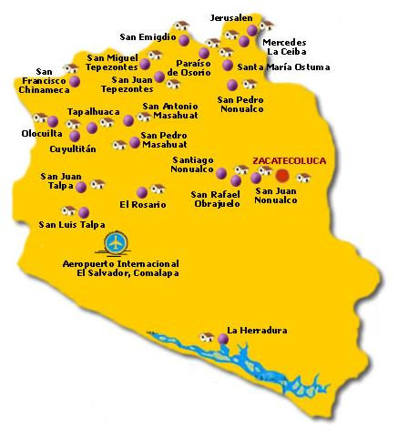

El relieve del departamento de La Paz esta determinado por una region montañosa, que lo ocupa en su mayor parte, y la llanura costera. La primera esta formada por las estribaciones de la cordillera Central (La Libertad - San Salvador - San Vicente), perteneciente al Eje volcanico salvadoreño-guatemalteco y se encuentra atravesada por varios valles fluviales. Su maxima cumbre es el volcan San Vicente o Chichontepec, junto al cual destacan los cerros El Volcancito y La Carbonera (los unicos que superan los 1,000 m). La llanura costera, cuya anchura oscila entre los 10 y 20 km, es una planicie aluvial atravesada por una gran cantidad de rios, en la que se han formado numerosos esteros.
Entre ellos figuran los de Jaltepeque, con varias islas interiores, Limpio, Solomillo y El Esteron. Otros accidentes del litoral dominado por la llanuran son las playas La Zunganera, El Pimental, San Marcelino, Las Hojas y Los Blancos, y la punta y bocana de Cordoncillo. La red hidrografica esta compuesta por numerosos ríos que desembocan en el Pacífico, como el Tihuapa y el Comalapa; o integran las cuencas de los ríos Jiboa (emisario del lago Ilopango), como el Sepaquiapa y el Tilapa, y también Lempa. El lago Ilopango es de origen volcánico y en su interior se halla la isla Cerro Los Patos. Con alrededor de 4,300 ha, es el segundo mas grande cuerpo de agua sobre El Salvador, así como una de las principales extensiones de bosque salado (manglar). Ubicado en la porción oriental costera del Departamento de la Paz a unos 60 Km. de San Salvador, en el se localiza la mas desarrollada zona turistica de playa del pais, Costa del Sol, por lo que las facilidades de hospedaje, alimentación y transporte son amplias, incluyendo algunas en las islas. Aqui ocurre la gran mayoría de aves marino-costeras salvadoreñas, siendo además sitio de anidación para muchas de ellas, también alberga gran diversidad de especies terrestres asociadas a cuerpos de agua y de zonas bajas en general. Los principales accesos son Costa del Sol (a 65 Km. de San Salvador) y Puerto La Herradura (a 60 Km. de San Salvador), ambos con servicio regular de transporte público desde San Salvador y Zacatecoluca, respectivamente Completan el sistema hidrográfico del departamento las lagunas de Nahualapa, Limpia, El Gallo, Jauta, Contreras, Solomilla y El Patrono.
El clima es templado húmedo en la zona montañosa, con lluvias que superan los 2,000 mm al año, y cálido y semihúmedo en los valles septentrionales, el centro y la llanura litoral, con lluvias de 1,500 mm anuales. La flora del departamento está representada por especies típicas del bosque húmedo tropical y húmedo subtropical, como cedro, bálsamo, copinol, cortez negro, mangle negro, palo blanco, conacaste y morro.
Regresar